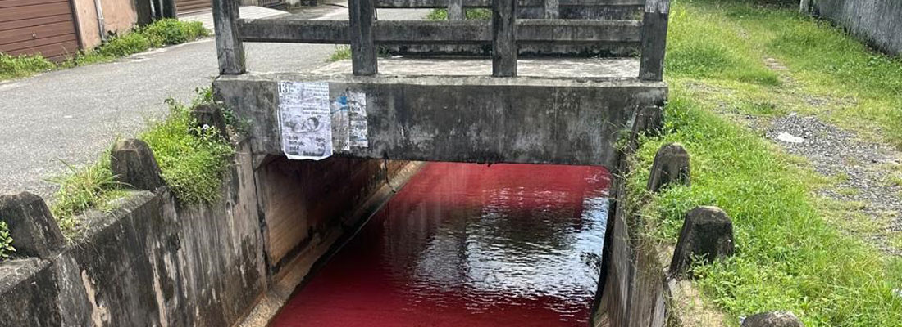
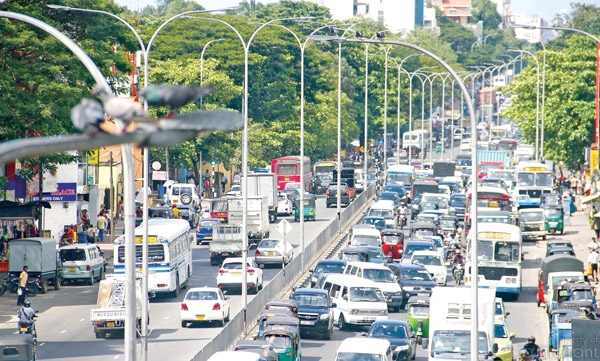
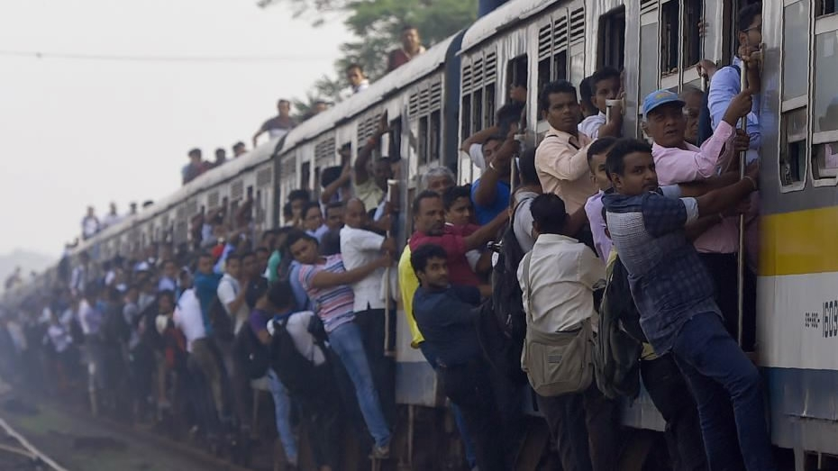
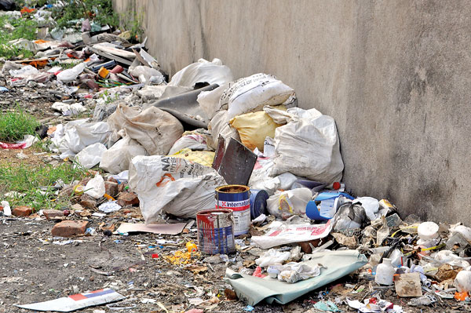
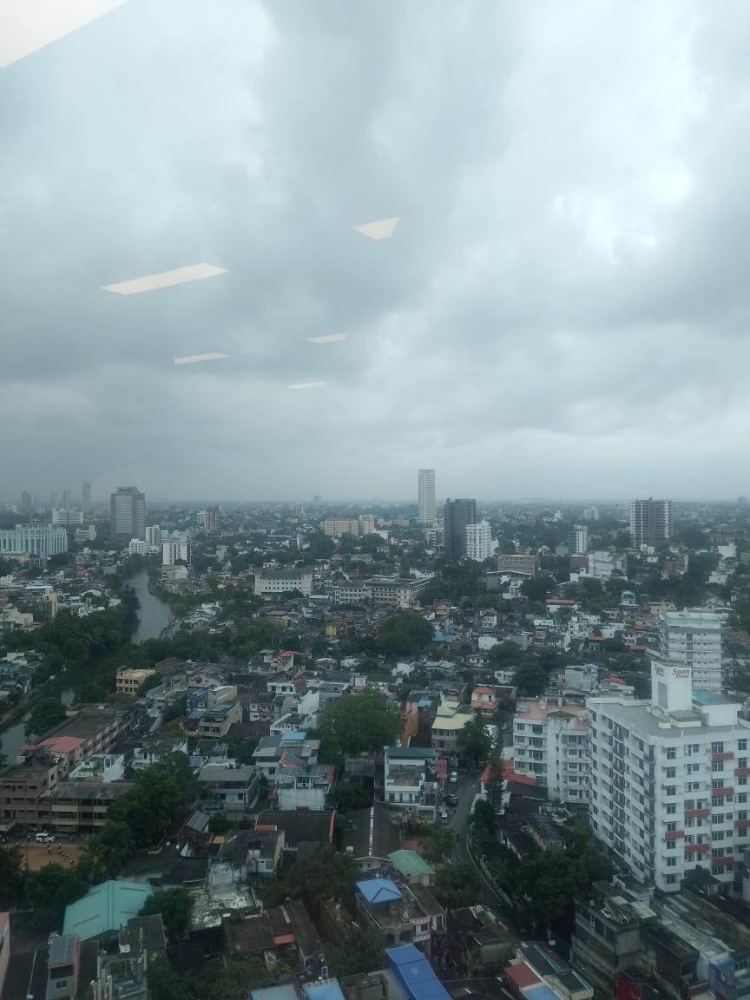
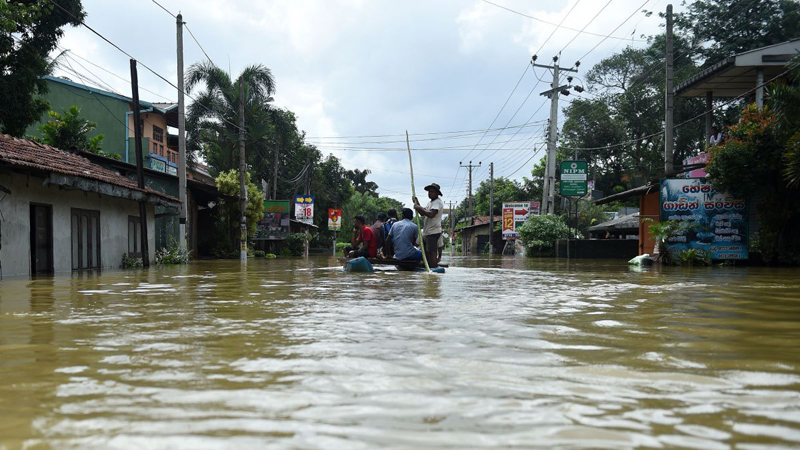

1. Waterway Pollution
Discoloration and contamination of waterways due to industrial and domestic chemical discharge are severely harming Dehiwela's aquatic ecosystem and public health.
Explore the most pressing urban challenges affecting daily life and sustainability in Dehiwela.
Discoloration and contamination of waterways due to industrial and domestic chemical discharge are severely harming Dehiwela's aquatic ecosystem and public health.

Rush hour traffic in Dehiwela has become increasingly unmanageable, leading to time loss, air pollution, and daily commuter frustration.

Public buses and trains are frequently overcrowded, putting passengers at risk and making transportation less accessible, especially for the elderly and school children.

Irregular garbage collection and lack of recycling infrastructure are leading to unhygienic conditions and illegal dumping in public areas.

The lack of parks and green zones in Dehiwela limits opportunities for recreation and contributes to poor air quality and rising temperatures.

During heavy rains, several areas in Dehiwela experience flash flooding due to blocked drains, poor runoff infrastructure and illegal construction over water channels. This leads to traffic disruptions, damaged property and increased disease risk.
